REGISTRO FERROVIARIO
Una web dedicada a los trenes que han circulado y circulan por Ecuador.

Sistemas ferroviarios en Ecuador
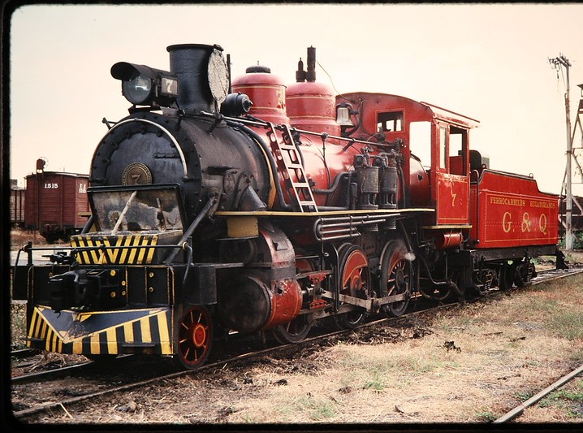
Ferrocarriles del Ecuador
Todos los ferrocarriles que han existido y existen a lo largo del país.
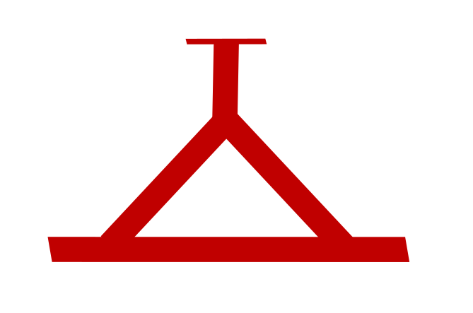
Metro de Quito
El primer sistema metropolitano del país.
Tranvía de Cuenca
Tren ligero en la capital azuaya que recorre el casco histórico de la ciudad.
Sistemas Históricos
Antiguas redes de tranvías urbanos de tracción animal, a vapor y eléctrica en Guayaquil y Quito.
Enlaces Rápidos

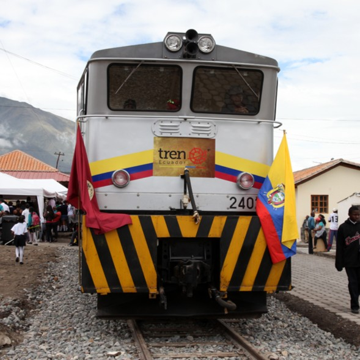
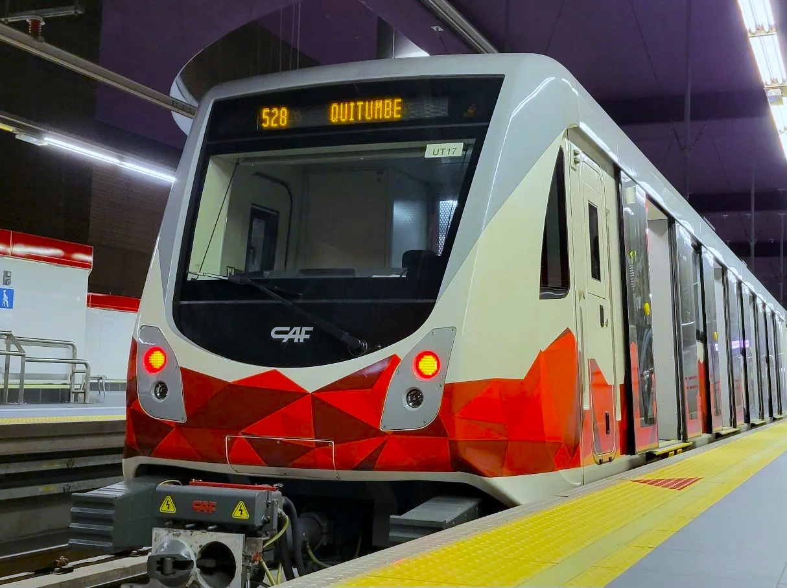
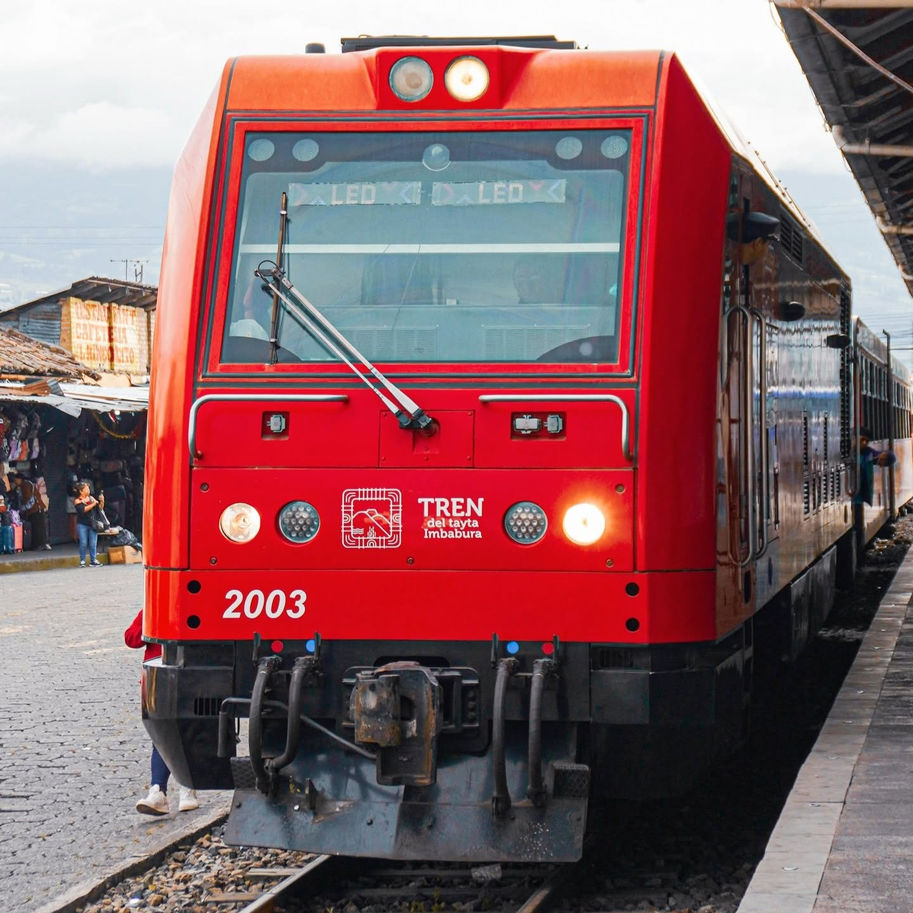
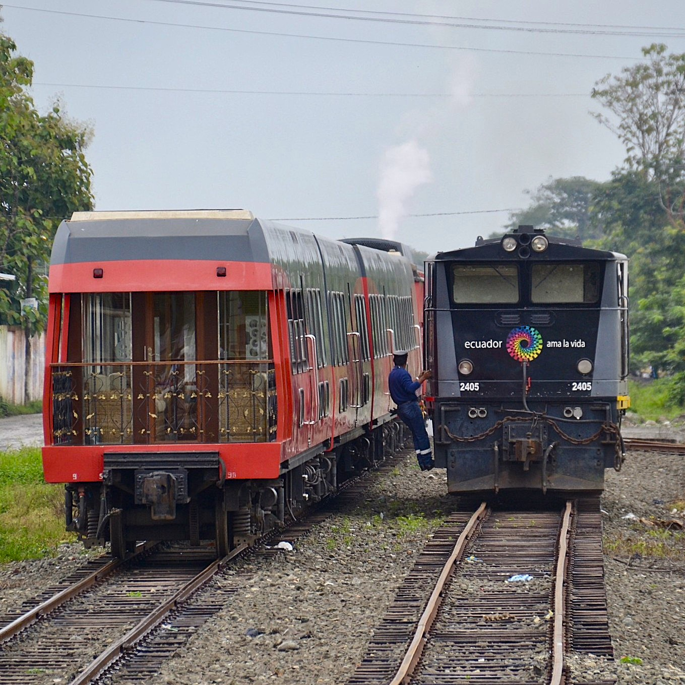
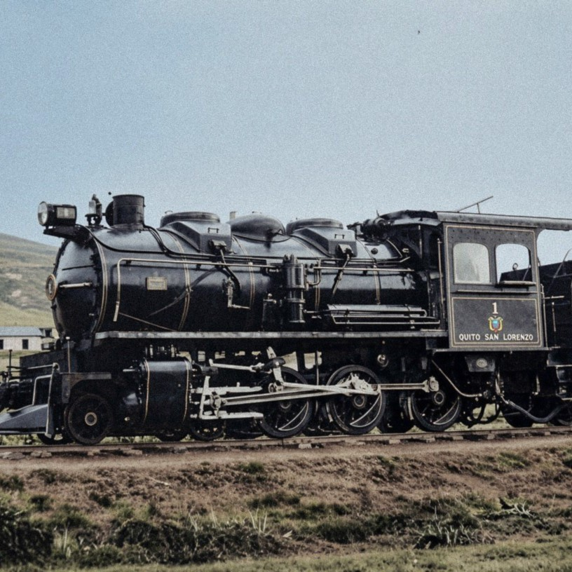
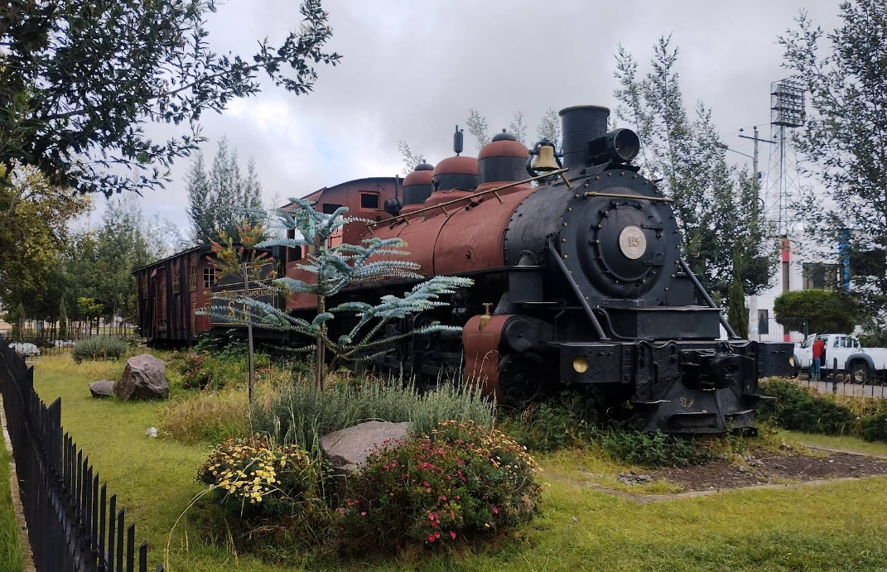
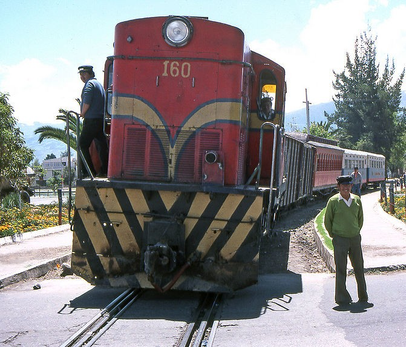
Cargando noticias...
Acceso rápido a "Fichas técnicas de materialrodante"
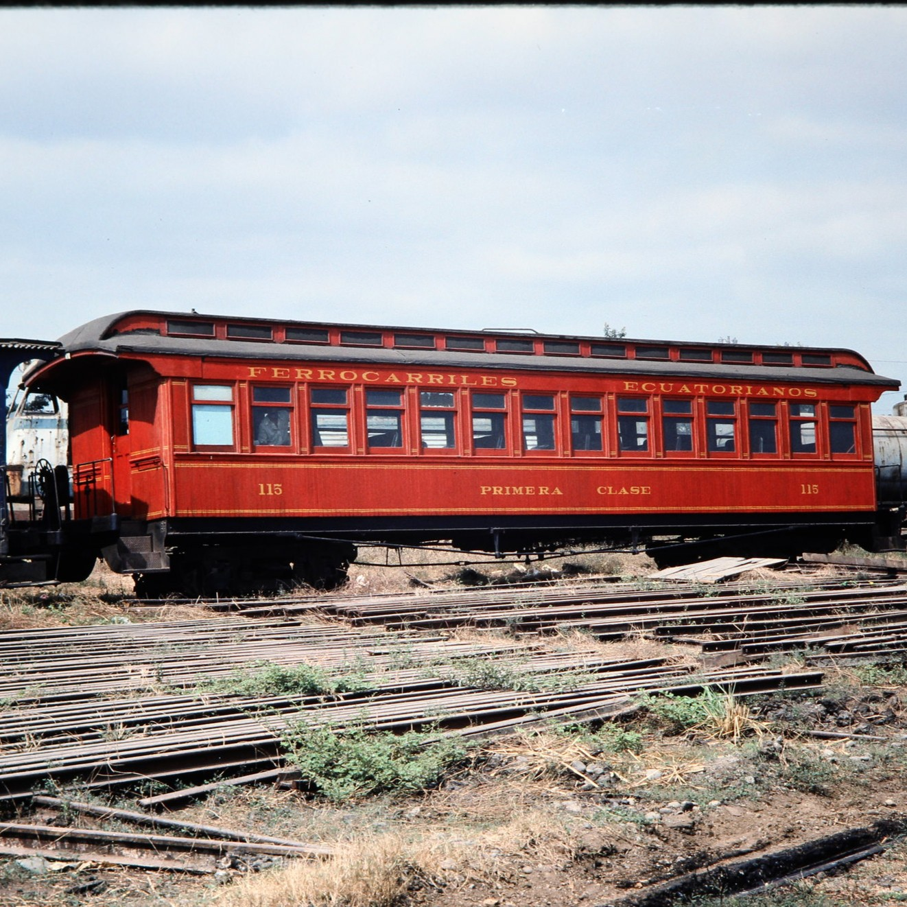
G&Q Colonial madera 13m
Coches clásicos de madera de estilo colonial.
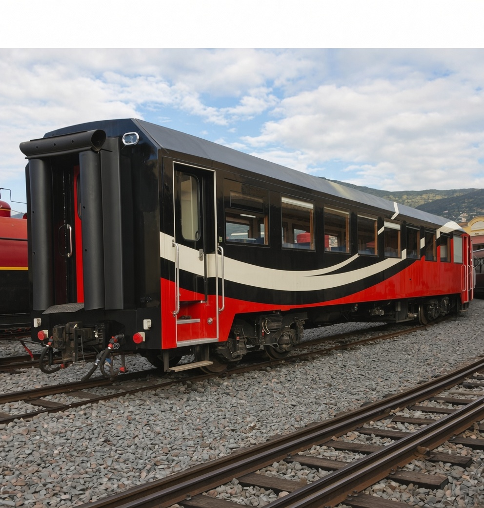
FEEP CUT 4
Coches de segunda mano españoles para trenes turísticos de FEEP entre 2014 y 2020.
FEEP 2000
Locomotoras duales de segunda mano españolas para trenes turísticos de FEEP entre 2015 y 2020.
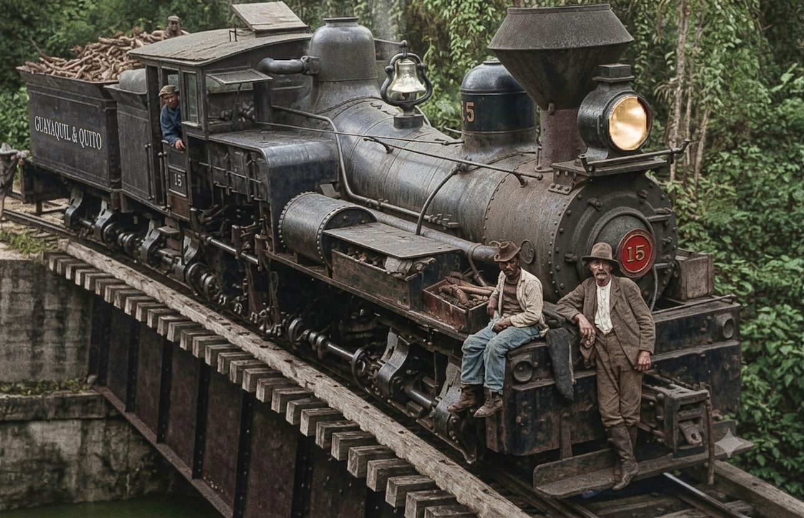
G&Q Lima-Shay
Locomotoras de vapor articuladas con transmisión por engranajes.

G&Q Baldwin 2-6-0 "Mogul"
Locomotoras de tracción a vapor para carga y transporte de pasajeros.

G&Q Beyer Peacock Garratt 2-6-2 + 2-6-2
Locomotoras articuladas diseñadas para cargas pesadas en fuerte pendiente.
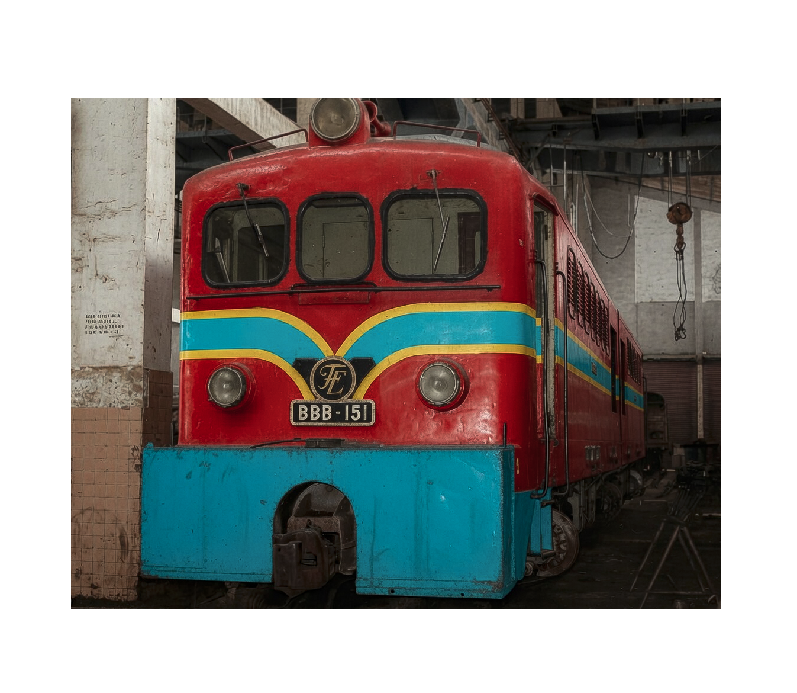
QSL Alsthom-Sulzer
BBB-150
Locomotoras diésel de doble sección de origen francés.
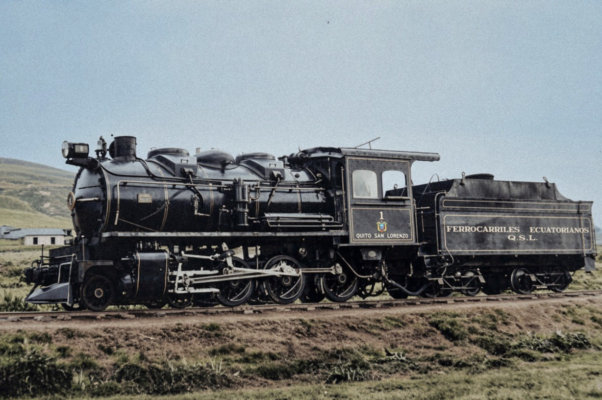
QSL Borsig 4-6-0
Primeras locomotoras del Ferrocarril Quito a San Lorenzo en 1926.